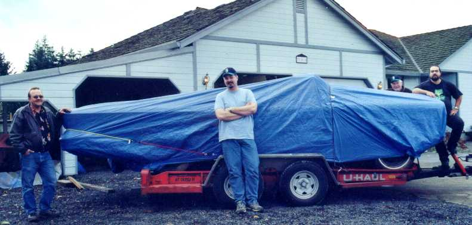

Click the Edsel family picture above to hear an old radio jingle for the 1958 Edsel!
Acquisition, anticipation and the beginning to November 2002
Click the Edsel family picture above to hear an old radio jingle for the 1958 Edsel!
February 10th 2002: Caught sight of the car behind the car for the first time, an Edsel Citation Convertible, about as big as any car ever came and with grace and styling rivaling all the others of her day. Waiting for my severance check from my old job at Exodus (EXDS). When it comes I will exchange it for the old gal and do a total restoration on her. Picked up a parts car for my Ranger and as I left, I gazed longingly at the Citation...some day.
February 21st 2002: Crappy old company decided not to pay severance, there goes the Citation hope. Got new job however it also is in the high tech industry and after the collapse last year I don't know if this is a good idea....
August 1st 2002: Lost new job again, laid off again from tech industry again, man I need to change careers. Severance check should coming through this time from this company, WorldCom (WCOM)...maybe the Citation is still there...I will call...yes, she is still there and still for sale to me.
September 10th 2002: Keeping in touch with the current care taker as the severance is coming in, almost have enough to go pick her up. Need to rent two flat beds as the convertible comes with a complete other Citation as a donor.
September 11th 2002: Got the dataplate information so I can start discovering her history.
Decoding the VIN: X8WY704545 X8WY704545
X = Engine Code; X=475 Wayne also had a late start, in late July 1957. Approximately 712 2-door, 1,435 4-door and 286 convertible |
|
Decoding the Dataplate: 76B DE S L25 4 A 76B - Style: Citation 2 door convertible |
November 8th, Friday, 2002: Finally have the money together, made reservations at U-Haul.
November 9th, Saturday, 2002: Made arrangements to pickup the Convertible 58 Citation and the 58 Hard Top Corsair with the current owner, who by the way, has a great collection of out of the ordinary cars and a whopping neon Edsel sign in his enormous car collection garage.
November 11th, Monday, 2002: Called to ensure that my reservations were good for the two car trailers. They SAID they were confirmed, even charged me a holding fee...turns out U-Haul didn't have either Edsel in their database and when I told them the weight there was an audible gasp on the other end of the phone and some muttering about to heavy...so I guess I will be carrying a pair of Mustangs, 1965 as I recall. Turns out these two alternate cars are just fine for the trailers.
November 12th, 2002: Spending all week after work cleaning the garage out; including the existing Edsel Ranger, to make room for the convertible which has to remain dry.
November 13th, 2002: Called to ensure my reservations were good for the two car trailers...once again they assured me that I was good to go.
November 15th, Friday, 2002: Called again to ensure the reservations were good to go, turns out they weren't, also turns out the stores never got the reservations...after a scramble, two alternate locations were found in their system and my reservations for two car carriers were confirmed...uh, yeah, we'll see.
November 16th, Saturday, 2002, "E"day: U-Haul didn't have the reservations straight yet (at the first stop) at our agreed time, so with a scramble I did get the trailers, and was leaving three hours late. Weather report said stormy and wet. 168 miles later, two large trucks and two U-Haul trailers as well, we arrived and with muscle had the two vehicles loaded and the convertible wrapped like a blue bratwurst. My 85 year old grandpa who was along as a supervisor, said, "That looks like a boat!"
 |
 |
168 miles later, 85 dollars in gas, 30 dollars in food and lunch, and one ticket for driving 60 in the fast lane towing the convertible (5000 pounds) later, we arrived at home near Mount Rainer. You might say not the best region for a convertible but I would argue that it is the best, you really appreciate the car for what it is about half the year, the other half you curse the rain and gray skies. The trailers made it fine, nothing broke, fell apart, or flew off during the trip. Upon returning the trailers, and just for laughs, I checked the weight limitations of the trailers, each was rated at 3500 pounds, a full 1500 shy of holding up the convertible...which it did well...guess the manufacturers over build the trailers a bit *wink* *wink*
November 17th, Sunday 2002: Spent most of the day taking an inventory of the parts that came in both cars. Cleaned out both cars and found no paperwork or cool tidbits of info however automotive archeology on these pair is just starting.
 |
This picture shows the front end and the large amount of metal missing due to the ravages of rust. The headlights are still in there, they are just rolling around at the end of wires like marbles, their shells as thin a an onion skin. The grills are not in bad shape. |
November 18th, Monday, 2002: Removed the last few bolts for the front end of the Convertible and lifted the front up and away from the rest of the car. This gal has seen a lot of rust on these fenders. I have a terrible cold and am calling it quits early to get some much needed rest.
November 19th, Tuesday, 2002: Removed the rest of the front end skin and inventoried the engine compartment wires and gadgets...labeled them all and removed them putting them in baggies. Turns out that the Convertible was one of the lucky ones in Michigan to get the electric wipers before the manufacturer ran out of motors. Also something odd...the air cleaner, water pump, and valve covers are all red (right down to red primer and metal, so if they were once the traditional Edsel colors, someone went to a lot of trouble removing all the paint, then primering and repainting. The Edsel markers on the valve covers had a black "E", a white "4", a blue "7" and a dark red "5". red white and blue, maybe the car has some sort of patriotic past...very odd.
|
|
Removing the clip here, luckily it was falling off already so it didn't take much effort to tilt the front end off...hmmm, wonder if I should weld the hood on and go for a tilting front end...na. |
| Here is an engine bay shot. Note the odd red valve covers (the air cleaner too, not pictured) that had red, white, and blue lettering "E475". The red paint was over red primer, whoever did it took a lot of time to remove the original off-white colors. The only part original in green was the intake manifold. The block was silver over a not-so clean block, lots of grime in nooks and crannies below the silver paint. Someone probably attempted a quickie rebuild at some point in its past. The horns by the way: dead. |
|
There was a mention that the engine may have been recently rebuilt (well probably 25 years ago when it was laid to rest in a junk yard after it was side swiped). The engine itself was mostly there, no wires and the plugs were mostly broken off at the block. The generator is gone but that is fine, I have a new olive green enabled alternator to step up her power from 35 amps stock to just around 110 or so. The distributor cap insides look fine showing very little use and the plug tips are also fairly clean, this old guy must have had little road time before the graveyard. The freeze plugs look new, the coil is gone as is all the wiring dealing with the generator and voltage regulator...that will take some work to re-plumb. The exhaust is gone so that takes care of having to toss the old tubes. The manifolds look good and there appears to be little in the way of leaks that the old car experienced before going out of service, nice, less to clean before sanding.
The power steering is there but I am not sure if the mechanics are okay, I will be replacing the hoses anyway and I have a restored power pump ready to go. The radiator is gone but luckily I have a spare one. The 410 is close to the Lincoln 430 and most parts are interchangeable so it should not be a problem finding parts; I realize I may be curing myself my saying that.
The firewall is bare now, interesting to see the original turquoise color bright and glossy beneath some of the removed parts.
 |
Bare now, surprisingly little damage to the main core of the body, the front bore a lot of rust damage. You can see the visors are very sad as is the interior but that will all go at some point and be replaced by the Oregon folk that supply interiors for a lot of us Edsel folk (their name to follow, can't remember it right now, something like SMS or S&M). |
November 20th, Wednesday, 2002: Found out a few interesting things today about the car, the engine is not frozen, it does turn by muscle and breaker bar but not all the way round, something is halting the rotation and I feel it is valve train related...just a gut feeling. Needed to turn the engine crank a bit to get at the torque converter bolts so I thought I would loosen the spark plugs, sounds logical right? Well...I started to turn the engine by hand again and heard a dull gurgle followed by a wet splash reminiscent of a frat party with far too much mixing of beer and cheap liquor...I looked under the engine and found two large puddles...on the passenger side of the car lay a puddle of motor oil, clear and fresh and on the drivers side, a puddle of transmission fluid, also clear, red, and fresh. This liquid had come gushing out of the spark plug holes...maybe it was there to prevent the engine from rusting or seizing; in either case it was a surprise. It will be interesting to pull the heads and see what's living in the block...curious as to why there were two different liquids and one on each side...puzzling. Yanked the engine with no trouble, took a good look at the nearly 800 pound giant and from an outside inspection it looks fair. I will be taking care of the engine rebuild and transmission rebuild as first orders for the project. The basic run down for the resto project could be (and will change 1000 times I am sure):
The "E-475" Engine

November 21st, Thursday 2002: Moved the massive engine onto the engine stand...made sure to check that it can hold that much weight. 1000lbs, that is good enough. The engine looks a lot larger out of the car than in for sure so now, where to begin. I pulled off the colorful red valve covers to examine the valves and springs, they look very clean and new, even the valve guides are blue and look
unused. Drained the oil out of the engine and ended up with about three gallons of oil, much to my surprise. There was a great deal of oil above the cylinders as well as below, my assumption was that it was there to act as a
preservative by a previous forward thinking owner. Flipped the engine over too and removed the pan, the crank
looked good from a visual inspection as does the rest of the hardware down below. The oil pump pickup looks a little hashed but I am going to replace that anyway, along with all the gaskets and seals in the engine...maybe I won't
have to do a full rebuild. Oh yeah, all the freeze plugs look shiny and fairly new...I guess the engine probably saw less than 5k miles before the car was retired to a Vancouver BC junk yard a couple of decades ago. Tomorrow I will pull the heads and see what the upper side looks like. G'night.
 |
Here it is, the mighty 475 and still dangling
from the cherry picker and just getting bolted to the engine stand.
Here you can see the very odd colors of this engine. Probably resulting from a rebuild sometime in the 70's or earlier...kinda odd, as the car has less that 70k miles on it. You can make out where someone painted in yellow letters on the valve covers the "4V"...and of course the Red White and Blue numbers "475" with a Black "E". Interesting color set. The heads were painted with a strange silver paint that flaked and was for the most part gone. It must have been a rush job at some point to sell the car as a lot of paint was laid over existing engine grime and oil caking. When I went to clean and scrub this power plant, it was a mess, the paint sloughed off easily because it was not cleaned and primered in the first place, low temp paint was used on the heads and block and was noticeably burnt in places it was not rusty. |
|
November 22nd, Friday 2002: Today I yanked the heads off and found that
they have never been used, the valves are new, seats, and guides. So now I
am wondering weather or not the engine saw any life after the heads were
rebuilt. Removed all the rest of the dressing, water pump (toast or rather
rust), timing cover and lower flywheel. Timing chain looks new...very
puzzling things but that is the fun of it. The lifters look old but that
is from sitting for nearly three or so decades, *toss*, I'll be getting new
lifters and rods too, one rod was slightly bent so *toss* on with a new
pair. The cam bearings look great as does the cam. So the assessment
is done for the engine. Here is my shopping list however, since I bought
the car and spent nearly every last dime on it, I will have to wait until after
Christmas to get any parts...sigh, guess I will work on cleaning the engine and
dressing it properly (mmm, dressing...as in Turkey stuffing).
The white arrow points to the very dark and aged head and exhaust manifold assembly. |
 |
| November 27th, Wednesday 2002: Got the
lower end of the engine completed, the crank was fine and didn't need to
be spun, so with a fresh set of bearings and plenty of assembly lube the
crank fit nice. Cylinder walls are like new now and a fine set of stock
pistons sit inside now, all courtesy of the local NAPA auto parts, yes
they had everything for the lower end rebuild including a reasonable price
on a complete engine gasket set. The original cam fluxed fine and only
required a bit of cleaning, apparently it hasn't seen much action.
You can't see it clearly from here, but, once you get your heads on, stuff some of those blue shop cloths in the ports to keep small bits of dust, grime, bolts and screws out of there, it is a shame to pull a head one it has been torqued down because you dropped your pizza on the engine and a few olives dribbled into the number three intake...sigh. |
 |
November 28th, Thursday 2002: Just before I had to head out for Turkey day
festivities with the relatives, I got a chance to review the rods and lifters. One rod was slightly bent so I am going with an entire new set and of course after 25 years a few of the lifters looked like they had taken a siesta, off to the trash with them. Napa was able to also cough up a new set of lifters but no rods so I will pick those up another time.
November 29th, Friday 2002: This project is taking some time every day of my life which is okay at this point but I should tend to things like working *wink*. Today I ceramic coated the block, heads, and intake manifold with a near-match original
"Detroit Fern Green" color, courtesy of Dupli-Color 500. The underside freeze plugs were easy to match out of a few
tries with the intake at the local Napa. "Parts Challenge!" Okay, talked to Napa and the water pump is
non-existent in their books, they spent a good hour looking around and didn't find much, the Lincoln 430 worked fine however I will rely on Kanter Automotive (www.kanter.com), they supplied a lot of hard to find parts for my last car.
 |
 |
Here's a shot with the engine just in the background on the left right after
extraction from the car. On the right is a shot of the old bendix power
brake booster with the air cleaner just laying on top of the intake manifold (no
carb with this car)...this will go away and be replaced with a brand new and
modern unit with a set of fine, 4-wheel large disk brakes.
November 30th, Saturday 2002: Today I started research on Disk Brake conversion kits, surprisingly there is little direct information such as cross application references so it will be an adventure to get that part of the restoration done. I will be replacing the original booster with a new setup that allows for front discs to give the large car a better chance of stopping and of course years of
trouble free use on a new booster. I will post part numbers and sources as I go through this process. Looks like
http://www.mpbrakes.com will be a great source for the kit. I will run my own new lines to the rears of the car...but for now, the engine is the focus of the project. Ran into a little oddity...the word "front" is stamped on the air cleaner top however when pointed to the front, it misaligns the air intake from the side area...I don't wonder if the air cleaner is not original (beside it being bright red). Also gave the exhaust manifolds a good cleaning and ceramic coating followed by a good bake in the oven...pew, that is all I have to say.